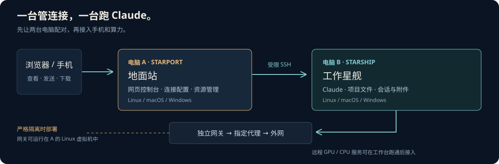

两台电脑。
一个随时可访问的
Claude 工作台。
A 管连接，B 跑 Claude。
在浏览器里接续会话、传文件、看结果。

A · Starport地面站：网页与管理
B · Starship工作星舰：Claude 与项目
严格隔离时：B → 独立网关 → 指定代理。
选择你的两台电脑
命令会跟随系统切换。所有命令都在仓库目录运行。
已勾选 0 / 8 步
需要的时候，让 Agent 接手。
选择具体任务，复制指令给仓库中的 Agent。